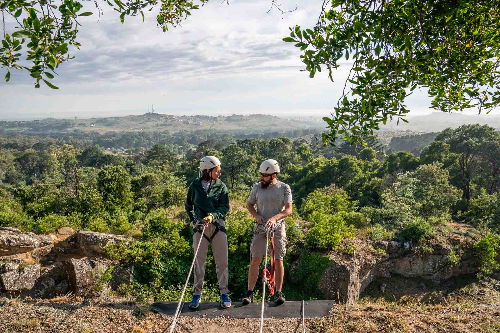

Dsifruta lo que ofrece Tandil
Famosa por su gastronomía, Tandil tiene varios parques, reservas, senderos y poblados rurales para combinar días de descanso con actividades al aire libre, disfrutando de paisajes de sierras formadas hace millones de años
Parque Lítico La Movediza
Está a 3 km del centro de Tandil y es uno de los grandes atractivos y símbolos de la ciudad ya que durante cientos de años contó con una gran roca de 300 toneladas que se mantenía en equilibrio.
En 1912, la “piedra movediza” cayó al pie del cerro y se partió en varios fragmentos. En 2007 se instaló una réplica, hasta la que se puede llegar por una senda que permite disfrutar de la gran vista que rodea al cerro.
Cerro El Centinela
Está a 4 km del centro. En este cerro hay una piedra gigante con una historia geológica similar a la de La Movediza, a la cual se puede llegar a través de un sendero rodeado de aromos y eucaliptus. Desde la cima se puede realizar un paseo en aerosilla y disfrutar de la hermosa vista de la ciudad y sus alrededores.
Turismo Aventura

Tandil ofrece distintas experiencias de aventura para vivir en tierra, agua y aire. Con prestadores habilitados, las actividades son muchas: senderos para caminar y pedalear, paseos a caballo, travesías en kayak, escalada, rappel, tirolesa, arborismo, entre otras.
Monte Calvario
Este parque temático religioso está a unas 15 cuadras del centro y es uno de los lugares emblemáticos de Tandil. Se puede recorrer caminando siguiendo un sendero zigzagueante entre pinos y eucaliptus hasta llegar a la cima coronada por una escultura de Cristo en la cruz. En la base del cerro hay locales de gastronomía y venta de artesanías.
Tradición gastronómica
La ciudad es famosa por su muy buena gastronomía y el maridaje de las picadas de elaboración local con herencia de la inmigración. En toda la ciudad hay numerosos restaurantes de categoría y puestos gastronómicos.
¿En donde queda?